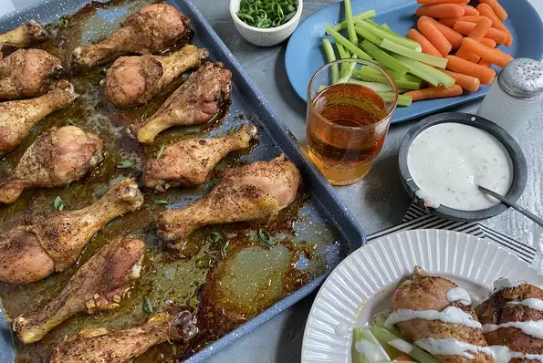

Baked Chicken Wings

Description
Easy, crispy, and delicious. I normally serve with a side of rice, chicken gravy, and a vegetable or salad.
Ingredients:
- 3 tablespoons olive oil
- 3 cloves garlic, pressed
- 2 teaspoons chili powder
- 1 teaspoon garlic powder
- salt and ground black pepper to taste
Steps:
- Preheat the oven to 375 degrees F (190 degrees C).
- Combine the olive oil, garlic, chili powder, garlic powder, salt, and pepper in a large, resealable bag; seal and shake to combine. Add the chicken wings; reseal and shake to coat. Arrange the chicken wings on a baking sheet.
- Cook the wings in the preheated oven 1 hour, or until crisp and cooked through.